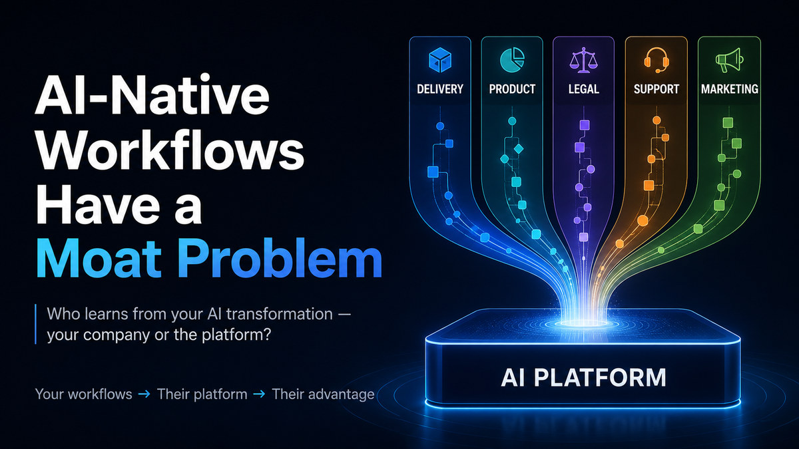

Original cover from the July 2026 AI Advances edition.
Source and image details
Original AI-generated artwork prepared for this publication by Vitalii Oborskyi.
As companies build valuable workflows on top of foundation-model platforms, they may be creating operational IP in environments where platform vendors are structurally better positioned to observe, abstract, and productize recurring patterns.
Before AI became the center of every boardroom conversation, the software industry was already complex, but still structurally understandable. The borders between players were never perfectly clean, yet most companies had a practical sense of where value was created and where it was captured.
Hyperscalers provided infrastructure: compute, storage, networking, security, data platforms, deployment environments, and later higher-level cloud services. Enterprise vendors built platforms, tools, systems of record, and ecosystems around them. Service companies turned those platforms into working business systems through implementation, customization, integration, modernization, delivery scale, and operational discipline. Product companies built customer-facing systems, proprietary workflows, and market-specific differentiation. Startups experimented at the edges, creating new categories or forcing larger players to react.
The ecosystem was never static. Hyperscalers moved upward into platforms. Vendors expanded into services and implementation tooling. Service companies built accelerators, internal platforms, and reusable delivery assets. Product companies internalized more engineering capability. Startups were copied, acquired, ignored, or occasionally became the next platform. There was always pressure, overlap, and competition.
Still, the system remained legible enough for strategy. A service provider could build a defensible business around engineering maturity, delivery governance, domain knowledge, program execution, and the ability to turn ambiguity into production software. A vendor could defend itself through product depth, ecosystem control, licensing, and customer lock-in. A hyperscaler could monetize infrastructure and gradually capture more value through managed services and developer platforms.
That stability mattered because it allowed companies to make long-term assumptions about their moats. A service company knew its value was not just “people who write code,” but the accumulated ability to deliver complex systems under real enterprise constraints. A product company knew its value lived in customer understanding, workflow ownership, data, brand, and distribution. A startup knew it could win by moving faster than incumbents in a narrow workflow category.
AI begins to disturb this balance.
Not simply because it makes some tasks faster or cheaper. That is the obvious part. The deeper shift is that AI starts moving cognitive and operational work across boundaries that used to be more stable. Planning, coding, testing, documentation, review, analysis, workflow orchestration, customer support, legal review, sales operations, and even parts of governance are increasingly mediated by AI platforms and model-driven tools.
Once a platform participates in how work is planned, executed, reviewed, and improved, it no longer sits only underneath the work. It starts to observe and shape how the work itself is done.
That changes the strategic question. It is no longer only about who writes the software, who hosts it, or who integrates it. The harder question is who learns from the process of doing the work — and who captures the value of that learning.
From Externalized Memory to Externalized Reasoning
It is tempting to describe AI as another productivity tool. In many practical situations, that is how it first appears: faster drafts, faster summaries, faster code, faster analysis, faster support. That view is not wrong, but it is incomplete. It explains the immediate benefit, not the structural change underneath.
A better way to understand AI is to ask what kind of human capability is being moved into an external system. Writing did this with memory. Once knowledge could be recorded outside the body, it became durable, transferable, searchable, teachable, and scalable. Books, archives, databases, and digital systems extended that shift even further. People did not stop remembering, but memory was no longer limited to what one person or one group could hold in their heads.
AI moves a different function outward. It does not simply store knowledge. It participates in reasoning workflows: synthesis, comparison, planning, drafting, coding, review, classification, problem decomposition, decision support, and explanation. It can take vague input and propose structure. It can compare options, generate implementation paths, surface risks, and simulate parts of expert reasoning.
This does not mean AI replaces human reasoning as a whole. That would be a lazy conclusion. People still define goals, understand business context, judge trade-offs, carry accountability, manage ambiguity, and own the consequences of decisions. But parts of the reasoning process that used to happen inside individuals, teams, delivery organizations, product groups, and business functions are now increasingly delegated to external model-driven systems.
That shift matters for business strategy. A developer may ask a model to explain legacy code, propose an implementation, generate tests, or identify edge cases. A lawyer may use AI to triage contracts or summarize legal risk. A marketing team may use AI to optimize campaign analysis. A support organization may use AI to classify tickets and recommend responses. A delivery leader may use AI to consolidate project signals, detect inconsistencies, and surface hidden risks across a portfolio.
The work is not fully automated, but part of the cognitive load has moved into an AI-mediated environment.
This is why AI is not just another layer of automation. Traditional automation usually took a known process and made it faster, cheaper, or more repeatable. AI often enters before the process is fully known. It helps shape the plan, interpret the context, generate options, and influence what should happen next. It does not merely execute instructions. It increasingly participates in forming them.
For companies, this creates a much larger question than productivity. If AI only made existing work faster, the main issue would be efficiency. But if AI changes where reasoning, synthesis, planning, review, and operational learning happen, then the strategic question becomes different: who controls that reasoning environment, who observes the workflow, who learns from repeated patterns, and who captures the economics of that learning?
Coding is only the most visible surface. The deeper shift is that organizations are beginning to externalize parts of their operating intelligence into AI-mediated systems. That creates real opportunity: faster work, lower cognitive load, broader access to expert-level support. But it also creates a new class of strategic risk.
When reasoning moves outside the organization, part of the organization’s learning process may move with it. And once learning moves, value can move too.
The Obvious Risk Is Data Leakage. The Deeper Risk Is Workflow Absorption.
The first AI risk most companies recognize is data leakage. If employees paste customer data, proprietary code, architecture diagrams, contracts, incident reports, internal strategy documents, or trade secrets into poorly governed AI tools, the company has a problem. Most serious organizations already understand this, even if their controls are still catching up.
But data leakage is only the first layer.
The deeper risk is operational IP absorption. This is not about one confidential file being exposed or one piece of source code being copied. It is about a company’s way of working becoming visible, repeatable, abstractable, and eventually commoditized by the platform layer.
In modern business, valuable IP does not always live in a repository, patent filing, or internal document. Often, it lives in the operating model: how teams break down ambiguous problems, structure reviews, stabilize uncertain outputs, route work between humans and tools, decide when automation is safe, and recover when it fails.
In an AI-native environment, these patterns become even more important. A successful workflow may include task decomposition, context selection, model routing, tool access, validation logic, human approval gates, retry behavior, fallback paths, audit traces, quality thresholds, and escalation conditions. If that workflow reliably turns probabilistic output into useful business execution, it is not just “tool usage.” It is operational IP.
The uncomfortable question is what happens when this operational IP is built on top of external AI platforms.
This is not necessarily about a vendor training a foundation model on customer data. Many enterprise AI contracts are designed to prevent that. The issue is broader than model training. The platform layer may sit close to the execution of the workflow: prompts, tool calls, orchestration patterns, telemetry, failure modes, repeated use cases, and the categories of problems companies are trying to solve.
Even when individual customer data is protected, recurring patterns can still become strategically meaningful. If many companies use AI systems to solve similar workflow problems, the platform ecosystem can see where demand is forming. It can identify which workflow categories matter, which product gaps create repeated workarounds, and which capabilities should eventually become native features.
That is not theft in the simple legal sense. It is value migration.
A company may discover a powerful workflow while solving a real operational problem. The pattern may be refined through real constraints, real failures, real edge cases, and real business pressure. But if that pattern is executed through a platform-controlled environment, the platform vendor may be better positioned to abstract it, generalize it, and distribute it at scale.
The company discovers the pattern. The platform may capture the scalable economics.
This is why “IP leakage” is not enough as a concept. Leakage suggests accidental exposure. The more serious scenario is structural absorption. The workflow becomes part of a larger platform learning environment. The original source becomes difficult to prove. Implementation details disappear into logs, telemetry, support interactions, integration behavior, and repeated customer usage. Later, a similar capability may appear as a native platform feature, detached from the company that first made it work in practice.
In the worst case, the platform layer becomes an IP washing machine for operational patterns. The raw implementation may never be copied directly. Customer data may remain contractually protected. The vendor may not do anything that looks like classic IP theft. Yet the abstracted pattern can still move upward into the platform and return to the market as a generalized product capability.
That is the strategic risk.
And it is extremely hard to prove after the fact. A code leak can sometimes be traced. A copied document can sometimes be identified. A stolen design can sometimes be compared. But how do you prove that a vendor-native workflow was influenced by your internal orchestration logic, evaluation loop, fallback structure, or review gate design once the pattern has been abstracted?
In most cases, you probably cannot.
This does not mean every AI platform is dangerous or that vendors should be treated as hostile actors. This is not an anti-platform argument. Platforms are necessary, and most companies will continue to depend on them. The point is different: operational knowledge is now moving through systems companies do not fully control.
The obvious risk is data leakage. The deeper risk is that the way a company learns how to work with AI may become visible to platforms that are better positioned to productize that learning.
This Hits Service Companies First — But Not Only Them
Service companies are not the only companies exposed to this risk. They are simply the easiest place to see it.
A service company’s moat is usually distributed across delivery capability, process maturity, engineering governance, senior technical judgment, reusable accelerators, domain delivery patterns, client trust, and the ability to scale execution across complex programs. A strong service provider is not valuable simply because it has people who can write code. It is valuable because it can take ambiguous business intent, legacy constraints, fragmented stakeholders, security requirements, integration problems, and delivery pressure — and turn all of that into working systems.
That capability is hard to build, and much of it is not visible as a single asset. It lives in habits, standards, review practices, escalation paths, architecture judgment, estimation discipline, delivery rituals, client communication, and the accumulated memory of what failed before.
AI-native platforms are now moving toward that same operational layer. They are not entering only coding. They are entering planning, analysis, testing, review, documentation, workflow orchestration, knowledge management, project reporting, quality control, legal review, customer support, sales operations, marketing operations, and delivery governance. This is where many companies create practical differentiation, even if they do not call it IP.
For service companies, the risk is delivery know-how becoming platform capability. But the same pattern applies elsewhere.
For startups, the risk is that a vertical agent becomes a native feature. For product companies, the risk is that workflow differentiation gets absorbed into the platform layer. For enterprises, the risk is that internal operating knowledge becomes visible through external AI systems. For business functions, the risk is that the unique way a team handles legal review, support escalation, procurement, compliance, sales operations, or campaign optimization becomes a recurring pattern that the platform can generalize.
The legal-tech reaction to Anthropic is a useful warning signal. Anthropic’s legal productivity plugin was described as automating contract review, NDA triage, compliance workflows, legal briefings, and templated responses. After its release, several legal, data, and information-services stocks reacted sharply. Some legal-tech leaders argued that the tool was still raw and not an immediate replacement for specialized platforms. That may be true. But investors still saw the structural issue: if a foundation-model platform can move directly into a workflow category, the moat of specialized vendors becomes harder to defend.
The same pattern can hit startups. A recent reported case around an AI ad-management startup illustrates the risk: the founder claimed that new Claude and Manus capabilities made the company’s product nearly obsolete by commoditizing parts of the workflow it had packaged. Whether that specific company ultimately survives is not the main point. The important signal is the pattern: when a vertical startup’s value is mostly a workflow layer on top of general AI platforms, one platform update can quickly turn differentiation into fragility.
This does not mean service companies, startups, or product companies are doomed. The best ones may become stronger if they combine domain context, accountability, distribution, data, workflow ownership, and AI-native execution better than generic platforms can. But the strategic risk is real: if the most valuable new workflows are created inside AI-mediated environments, the question becomes who owns those workflows and who is best positioned to scale them.
The question is no longer only: “How do we use AI to move faster?”
That question matters, but it is incomplete.
The harder question is: “Which parts of our AI-native operating model must remain ours?”
This Is Not a Vendor-Theft Argument
This argument needs to be precise. The concern is not that foundation-model vendors are simply stealing customer IP. That would be too crude, and in many cases wrong. Enterprise contracts, privacy terms, deployment models, retention policies, and security controls matter. Some platforms provide serious guarantees, especially in regulated or enterprise environments.
It is also not an argument against AI platforms. Service companies, product companies, startups, and enterprises will continue to use them, and in many cases they should. The capabilities are too important, the pace of improvement is too fast, and the economic pressure is too strong. Avoiding AI platforms entirely is not a serious strategy for most companies.
The real issue is structural asymmetry.
Platform vendors operate across many customers, industries, use cases, integrations, workflows, and failure modes. They can see where demand is forming, which categories of problems repeat, where users build workarounds, and where enterprise teams keep asking for the same missing capabilities. That kind of market visibility is powerful.
An individual company may solve a difficult problem in one context. A platform vendor may see the same category of problem across hundreds or thousands of contexts. The company has depth: domain knowledge, customer relationships, delivery accountability, product context, internal process knowledge, and real operational constraints. The platform vendor has breadth: infrastructure, distribution, product teams, usage patterns, and the ability to turn recurring demand into native features.
Both sides create value, but they do not capture value in the same way. A company captures value through execution, trust, context, product ownership, integration, customer understanding, or delivery responsibility. A platform vendor captures value by turning repeated patterns into scalable product capabilities. That is not immoral. It is how platforms work. They absorb friction from the market, standardize it, and sell the simplified version back to everyone.
The strategic question is what happens when the friction being absorbed is not generic workflow friction, but the operating intelligence of companies building on top of the platform.
If a company creates a better AI-native workflow, it may improve margins, speed, quality, or scalability. But if that workflow emerges inside a platform-mediated environment, similar patterns may eventually become standard product behavior. The company may still keep domain expertise, customer relationships, distribution, or brand, but part of its differentiation can move upward into the platform layer.
The risk is not necessarily malicious behavior. The risk is value migration.
This framing avoids the wrong debate. The question is not whether vendors are good or bad. The question is whether the economics of AI platforms give them a natural advantage in observing, abstracting, distributing, and monetizing recurring operational patterns.
This kind of platform absorption is not new. Manual practices became software features. Consulting playbooks became SaaS workflows. Custom scripts became managed services. Internal tools became product categories. AI accelerates the same dynamic because more of the work itself now happens inside model-driven environments.
For companies building serious AI workflows, the response should not be paranoia. It should be design. They need to know which parts of their AI-native operating model can safely live on external platforms, which parts should remain internal, which parts should be protected as trade secrets, and which parts should become proprietary tooling or formal IP.
The point is not to distrust every vendor.
The point is to stop treating AI adoption as if it were only a tooling decision.
It is also a value-capture decision.
The Strategic Response: Build Control, Not Just Adoption
The strategic response is not to avoid AI platforms. That would be unrealistic, and for many companies it would be a losing move. AI-native tools will become part of software delivery, enterprise operations, product development, and knowledge work. The question is not whether companies will use them. They will.
The real question is whether they will use them in a way that strengthens their moat or slowly dissolves it.
If AI adoption is treated only as a productivity program, the organization will optimize for visible speed: more code generated, more tickets processed, more documents produced, more prototypes delivered, more tasks automated. Those improvements can be useful, but they do not automatically create strategic defensibility. In some cases, they may create hidden exposure if the company builds its new operating model inside systems it does not fully control.
The winners will not be the companies that simply use AI the most. The winners will be the companies that understand which parts of their AI-native operating model must remain defensible.
That starts with a mindset shift. AI-native workflows should not be treated as casual experiments or disposable prompt collections. A successful workflow that improves execution, reduces review load, detects risk earlier, automates expert reasoning, or turns uncertain model output into reliable business action is an operational asset.
This means companies need separation. Client data, product logic, internal methods, reusable workflows, generic automation, and strategic operating knowledge do not have the same risk profile. A company may be comfortable using a commercial model for low-risk summarization, but not for proprietary workflow orchestration. It may allow AI support for generic drafting, but restrict exposure of internal review frameworks, escalation logic, pricing methods, compliance heuristics, or domain-specific playbooks.
Companies also need to avoid hardwiring their most valuable operating intelligence into a single vendor ecosystem. Model-agnostic orchestration matters not because every company should build everything itself, but because strategic optionality matters. If core workflows depend too deeply on one model, one agent framework, one cloud environment, one telemetry layer, or one vendor roadmap, the company may gain short-term speed while losing long-term leverage.
This does not mean every organization needs to build a foundation model. For most companies, that would be absurd. But the orchestration layer, policy layer, evaluation layer, and workflow logic should be designed with portability and control in mind. The model should be a component, not the owner of the operating model.
Telemetry and retention are part of the same problem. Companies need to know what is logged, where it is stored, who can access it, how long it is retained, and whether it can be used for debugging, support, analytics, product improvement, or training. This sounds basic, but many AI pilots move faster than these questions. Teams connect repositories, expose documentation, automate workflows, and only later ask what traces were created along the way.
If a workflow contains valuable operational know-how, the trace of that workflow may also be sensitive. Prompts, tool calls, intermediate outputs, evaluation failures, retry behavior, escalation paths, and human corrections can reveal more than the final answer. They can reveal how the organization thinks, how it stabilizes uncertainty, and how it converts ambiguity into decisions.
This is where companies need internal AI control planes: not another bureaucratic approval layer, but a real operating mechanism. Clear gates, evaluation policies, observability, audit trails, escalation paths, ownership models, stop conditions, and rules for what can be automated, what must be reviewed, and what should not be exposed at all.
Finally, companies need to document and protect novel workflow patterns. Not everything deserves a patent, and not everything can be patented. Some patterns are better protected as trade secrets. Some should become proprietary internal tools. Some should become licensed accelerators. Some should simply be documented as part of a company’s methodology. But if a workflow pattern is strategically valuable and nobody defines it, names it, protects it, or embeds it into a defensible operating model, the company should not be surprised when the market eventually forgets where it came from.
The strategic response is not fear. It is discipline.
Use AI platforms, but do not confuse adoption with advantage. Build with vendors, but do not let vendor environments become the only place where your operating model exists. Automate work, but know which parts of the automation represent strategic know-how. Move fast, but keep control over the learning loops that make your company better.
The question is not whether your company uses AI.
The question is which parts of your AI-native operating model remain yours.
The Next Moat Is Controlled Learning
The next moat will not be “we use AI.” Everyone will use AI. Very soon, that statement will have the same strategic weight as “we use cloud” or “we have agile teams.” It may be necessary, but it will not differentiate anyone.
The real moat will be controlled learning.
In the old operating model, companies learned through people, projects, incidents, customers, failures, reviews, and accumulated judgment. Service companies turned that learning into delivery capability. Product companies turned it into better workflows and customer experience. Startups turned it into focused execution. Enterprises turned it into internal operating discipline.
AI changes that pattern. When teams use AI systems to plan work, decompose tasks, generate code, review output, summarize risk, automate support, analyze contracts, optimize campaigns, or orchestrate workflows, part of the learning loop moves into an AI-mediated environment. The organization is still learning, but it may no longer be the only learner in the room.
That creates a strategic question every company should ask directly:
Is your organization learning from its AI transformation, or is the platform learning from you?
The answer will not be binary. In real enterprise environments, both will happen. Companies will learn how to work faster and automate more. Platforms will also learn where demand is forming, which workflows repeat, which gaps customers keep trying to close, and which operational patterns are valuable enough to become product features.
That does not make platforms enemies. It makes the boundary of learning strategically important.
The weaker strategy is to chase productivity without asking what is being externalized. That may look impressive in the short term: more generated code, faster documents, more automated workflows, better demos. But if the company loses control over the learning loops that make it better, it may discover too late that it helped train the market while failing to strengthen its own moat.
The next phase of AI competition will not be decided only by who has access to the best models. Access will broaden. Models will improve. Tooling will become cheaper. Basic AI usage will become normal.
The harder advantage will come from knowing how to turn AI-assisted work into controlled organizational learning. That means knowing which operational patterns to expose, which to protect, which to productize internally, and which to keep out of invisible platform exhaust.
AI does not only change productivity.
It changes who learns from work.
And in the next phase of the industry, that may decide who captures the value.
References
Anthropic, Legal Productivity Plugin — official repository describing contract review, NDA triage, compliance workflows, legal briefings, and templated responses. https://github.com/anthropics/knowledge-work-plugins/blob/main/legal/README.md
Claude Plugin Directory, Legal — Anthropic verified legal plugin page for contract review, NDA triage, and compliance workflows. https://claude.com/plugins/legal
Morningstar, Thomson Reuters, RELX, and Wolters Stocks Crushed After Anthropic Debuts Claude Legal Plug-In — reported sharp stock declines after Anthropic’s legal plug-in release. https://www.morningstar.com/stocks/reuters-relx-wolters-stocks-crushed-after-anthropic-debuts-claude-legal-plug-in
The Guardian, Anthropic’s launch of AI legal tool hits shares in European data and software companies — covered market reaction across legal, data, and software companies. https://www.theguardian.com/technology/2026/feb/03/anthropic-ai-legal-tool-shares-data-services-pearson
Business Insider, Anthropic’s latest AI tool was seen by the legal software industry as a “shot across the bow” — discussed legal-tech reactions, including implications for Harvey, LexisNexis, Thomson Reuters, and other players. https://www.businessinsider.com/anthropic-legal-ai-tool-plugin-competition-lexisnexis-thomson-reuters-2026-2
Yahoo Finance / Benzinga, “Claude Just Killed Our Startup”: This SF Founder Says AI Made Her Product Obsolete Overnight — reported Ira Bodnar’s claim that Claude and Manus advances made Ryze’s ad-management product fragile or nearly obsolete. https://finance.yahoo.com/news/claude-just-killed-startup-sf-173105543.html
OpenAI, How your data is used to improve model performance — states that OpenAI does not train on inputs or outputs from business products such as ChatGPT Business, ChatGPT Enterprise, and API by default. https://help.openai.com/en/articles/5722486-how-your-data-is-used-to-improve-model-performance
Microsoft, Data, privacy, and security for Azure OpenAI Service — states that prompts and completions are not used to train, retrain, or improve base models. https://learn.microsoft.com/en-us/azure/foundry/responsible-ai/openai/data-privacy
Google Cloud, Gemini Enterprise Agent Platform and zero data retention — states that Google will not use customer data to train or fine-tune AI/ML models without prior permission or instruction. https://docs.cloud.google.com/gemini-enterprise-agent-platform/resources/zero-data-retention
Author
Vitalii Oborskyi is an enterprise delivery leader and independent research author. His work focuses on AI-assisted software delivery and the governance of systems that depend on model judgment. He is the author of Uncertainty Architecture and The Subprime Code Crisis.